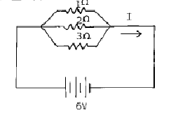

자동차정비기능장 (2002-04-07 기출문제)
1과목: 임의구분
1. 4행정 가솔린기관에서 흡기행정 중에 흡입되는 신(新) 기체의 양이 이론적인 값보다 감소되어 흡입되는 이유로 옳지 않은 것은?
- 흡,배기 밸브 개폐시기의 조정이 불완전하다.
- 흡,배기 밸브의 관성이 피스톤운동을 따르지 못한다.
- 피스톤링 및 밸브 등에서 가스누설이 생긴다.
- 흡기압력이 대기압보다 낮고 실린더벽 온도는 대기 온도보다 높아 신기체가 팽창하여 밀도가 높아진다.
(정답률: 53%)

2. 행정이 150mm인 가솔린기관에서 피스톤의 평균속도를 5m/sec라면 기관은 매분 몇rpm이어야 하는가?
- 500 rpm
- 1000 rpm
- 1500 rpm
- 2000 rpm
(정답률: 28%)
3. 비중이 0.73인 가솔린 100cc를 완전연소 시키는데는 몇cm3 의 공기가 필요한가? (단, 혼합비 14.8:1, 공기 비중량은 1.206kg/cm3 이다.)
- 895.5
- 8.96
- 1.12
- 0.89
(정답률: 28%)
4. 디젤기관의 연료 분사펌프에서 딜리버리 밸브의 작용이 아닌 것은?
- 배럴안의 연료압력이 규정값에 달하면 연료를 분사 파이프로 압송한다.
- 분사파이프에서 펌프로 연료가 역류하는 것을 방지한다.
- 분사노즐의 분사단절을 좋게하여 후적 현상을 방지한다.
- 분사압력이 낮으면 딜리버리 밸브 홀더의 스프링으로 조절한다.
(정답률: 65%)
5. 헤드 가스켓이 파손될 때 일어나는 현상중 해당되지 않는 것은?
- 냉각수에 기포가 생긴다.
- 방열기의 상부에 기름이 뜬다.
- 압축압력이 저하되어 시동이 잘 안 된다.
- 연소실에 카본이 잘 부착되지 않는다.
(정답률: 81%)
6. LPG의 설명 중 틀린 것은?
- 발열량은 약12,000 kcal/kg 이다.
- 기화된 상태에서는 공기보다 비중이 작다.
- 옥탄가가 높아 노킹을 잘 일으키지 않는다.
- 노말부탄과 프로판을 주성분으로 한 탄화수소의 혼합물이다.
(정답률: 57%)
7. 기관에서 산소센서를 설치하는 목적으로 가장 알맞은 것은?
- 정확한 공연비 제어를 위해서
- 일시적인 인젝터의 작동 차단을 위해서
- 연소실의 불완전 연소를 해소하기 위해서
- 연료펌프의 작동압의 정확한 조정을 위해서
(정답률: 74%)
8. 유체커플링 방식 냉각팬에 가장 많이 사용하는 작동유는?
- 실리콘 오일
- 냉동오일
- 기어오일
- 자동변속기 오일
(정답률: 70%)
9. 자동차용 기관오일의 기본적인 역할을 설명한 것중 틀린 것은?
- 마찰을 감소시켜 동력손실을 줄인다.
- 연소가스의 blow-down 현상을 방지한다.
- 마찰 운동부의 냉각작용을 한다.
- 접촉부의 녹이나 부식을 방지한다.
(정답률: 75%)
10. 디젤기관에서 사용하는 연료의 저위발열량 10,000kcal/kg 제동 열효율이 35% 일 경우 연료소비율은 몇g/PSㆍh인가?
- 160.25
- 172.45
- 180.57
- 195.36
(정답률: 26%)
11. 회전형 기관(rotary engine)을 왕복운동 피스톤식 기관과 비교하여 그 특징을 열거한 것 중 틀린것은?
- 회전운동을 하므로 진동이 없고 고속회전이 용이하다
- 회전력 변동과 소음이 적으며 NOX 발생이 적다.
- 중량 및 체적이 적으며 기계적 손실이 적다.
- 연소실 온도가 낮아 연료의 옥탄가가 높아야 한다.
(정답률: 56%)
12. 연료 분사장치에서 인젝터의 솔레노이드 코일에 전류가 통하는 시간으로 결정되는 것은?
- 응답성
- 분사량
- 분사 압력
- 흡인력
(정답률: 66%)
13. 배기가스 재순환장치는 배기가스 중 어떤가스를 제어하는 목적으로 사용되는가?
- 일산화탄소(CO)
- 탄화수소(HC)
- 질소산화물(NOx)
- 탄산가스(CO2)
(정답률: 73%)
14. L-제트로닉 가솔린 연료분사 장치에서 기본 분사량의 결정은 무엇에 의해 결정되는가?
- 냉각수 온도와 기관회전수
- 흡입공기량과 스로틀밸브 개도
- 흡입공기온도와 냉각수온도
- 기관회전수와 흡입공기량
(정답률: 56%)
15. 배기장치에 의해 일어나는 엔진의 배압을 더 커지게 하는 가장 큰 원인은?
- 부식된 소음기
- 오버사이즈의 소음기
- 부식된 배기관
- 오일과 탄소 알맹이로 막혀있는 소음기
(정답률: 66%)
16. 피스톤과 커넥팅로드를 연결하는 피스톤 핀의 고정방법이 아닌 것은?
- 고정식
- 반 부동식
- 3/4 부동식
- 전 부동식
(정답률: 71%)
17. 가솔린 기관의 노크을 방지하는 대책과 거리가 먼것은?
- 옥탄가가 높은 연료를 사용한다.
- 화염전파시간을 길게 한다.
- 냉각수 온도를 저하시킨다.
- 연소실 내의 카본을 제거한다.
(정답률: 59%)
18. 전자제어 가솔린 기관의 연료펌프 내에 설치되며 기관이 정지하면 곧바로 닫혀 압력회로의 압력을 일정시간 동안 유지시키는 밸브는?
- 체크밸브
- 니들밸브
- 릴리프밸브
- 딜리버리 밸브
(정답률: 66%)
19. 도수분포표에서 도수가 최대인 곳의 대표치를 말하는 것은?
- 중위수
- 비대칭도
- 모우드(mode)
- 첨도
(정답률: 64%)
20. 일정통제를 할 때 1일당 그 작업을 단축하는데 소요되는 비용의 증가를 의미하는 것은?
- 비용구배(Cost slope)
- 정상 소요시간(Normal duration)
- 비용견적(Cost estimation)
- 총비용(Total cost)
(정답률: 62%)
2과목: 임의구분
21. 서블릭(therblig)기호는 어떤 분석에 주로 이용 되는가?
- 연합작업분석
- 공정분석
- 동작분석
- 작업분석
(정답률: 29%)
22. 관리도에서 점이 관리한계내에 있고 중심선 한쪽에 연속해서 나타나는 점을 무엇이라 하는가?
- 경향
- 주기
- 런
- 산포
(정답률: 45%)
23. 모집단의 참값과 측정 데이터의 차를 무엇이라 하는가?
- 오차
- 신뢰성
- 정밀도
- 정확도
(정답률: 36%)
24. 준비작업시간이 5분, 정미작업시간이 20분, lot수 5, 주작업에 대한 여유율이 0.2라면 가공시간은?
- 150분
- 145분
- 125분
- 1⑤분
(정답률: 56%)
25. 종감속장치에서 구동피니언의 잇수가 6, 링기어의 잇수가 30이다. 추진축이 1000 rpm할때 왼쪽 바퀴가 180 rpm하였다. 이때 오른쪽 바퀴는 몇 rpm 하는가?
- 180
- 200
- 220
- 400
(정답률: 40%)
26. 판스프링에서 아이(eye)의 중심거리를 무엇이라 하는가?
- 새클(shackle)
- 스팬(span)
- 캠버(camber)
- 닙(nip)
(정답률: 42%)
27. 주행저항 중 자동차 중량과 관계가 먼 것은?
- 공기저항
- 구름저항
- 구배저항
- 가속저항
(정답률: 43%)
28. 승용차가 100km/h로 주행하기 위해 필요한 기관 소요마력(PS)은?(단, 이때 전주행저항은 80kgf,동력 전달효율은 75%)
- 약30
- 약40
- 약80
- 약106
(정답률: 26%)
29. 공기브레이크에서 유압식 브레이크의 마스터 실린더와 같은 기능을 하는 것은?
- 브레이크밸브
- 브레이크 쳄버
- 퀵릴리즈밸브
- 릴레이밸브
(정답률: 64%)
30. 제동장치 베이퍼록 현상의 원인이 아닌 것은?
- 공기 브레이크의 과도한 사용
- 드럼과 라이닝의 끌림에 의한 가열
- 긴 비탈길에서 브레이크의 사용 빈도가 많은 운전
- 오일의 변질에 의한 비등점의 저하
(정답률: 65%)
31. 브레이크 페이드 현상이 일어났을 때의 응급처리 방법으로 가장 적당한 것은?
- 자동차의 주행속도를 조금 올려준다.
- 자동차를 세우고 브레이크드럼 등의 열이 식도록한다.
- 브레이크를 자주 밟아 열을 발생시킨다.
- 주차 브레이크를 주브레이크로 대신 사용한다.
(정답률: 75%)
32. 자동변속기 고장점검을 위한 스톨테스트(stall test)에 대한 설명 중 가장 적절치 못한 것은?
- 변속기 오일의 온도가 정상인 상태에서 실시해야 한다.
- 제동을 확실히 하는 등 안전사고에 주의해야 한다.
- 시험시간은 5초를 초과하지 말아야 한다.
- 완전 제동상태에서 스로틀밸브를 50% 정도로 열고한다.
(정답률: 76%)
33. 전자제어 자동변속기에서 파워(power)모드를 선택했을 때 변속기의 작동을 바르게 설명한 것은?
- 오버 드라이브를 조기 작동시킨다.
- 출발시 2단 출발하도록 한다.
- 변속시점이 고정 되어진다.
- 변속시점을 지연시켜 바퀴의 구동력을 증대시킨다.
(정답률: 70%)
34. 앞바퀴에 수직방향으로 작용하는 하중에 의한 앞차축의 휨을 방지하고 조향핸들의 조작을 가볍게 하기위하여 시행하는 앞바퀴의 정렬방식은?
- 캐스터
- 토인
- 캠버
- 킹핀경사각
(정답률: 58%)
35. 제동장치 중 ABS(Anti-Lock Brake System)에 대한 설명 중 틀린 것은?
- 제동시 바퀴가 고정되는 현상을 방지하여 준다.
- 방향의 안정성 및 조종성의 확보가 가능하다.
- ABS가 없는 보통의 제동장치에 비하여 미끄럼이 없는 제동효과를 얻을수 있다.
- ABS가 고장이 발생할 경우 훼일세이프 기능이 없는 단점이 있다.
(정답률: 62%)
36. 어떤 자동차의 축거가 2.4m, 조향각이 내측이 35도, 바깥쪽 30도이다. 이자동차의 최소 회전반경은 얼마인가? (단, 바퀴의 접지면 중심과 킹핀과의 거리는 20cm)
- 4.1m
- 4.3m
- 4.8m
- 5.0m
(정답률: 18%)
37. 정밀도 검사대상 기계, 기구가 아닌 것은?
- 제동력 시험기
- 사이드슬립 측정기
- 속도계 시험기
- 엔진 성능 시험기
(정답률: 63%)
38. 주행 중 조향핸들이 한쪽으로 쏠리는 원인 중 틀린 것은?
- 조향핸들 축의 축방향 유격이 크다.
- 앞차축 한쪽의 현가 스프링이 절손되었다.
- 뒤차축이 차의 중심선에 대하여 직각이 아니다.
- 타이어의 공기압력이 서로 다르다.
(정답률: 48%)
39. 앞바퀴의 사이드슬립량을 조정할 수 있는 부분의 명칭은?
- 스트럿 바
- 타이로드
- 어퍼 컨트롤 암
- 킹핀
(정답률: 77%)
40. E.C.S(전자제어 현가장치)의 기능이 아닌 것은?
- 주행 안정성 확보 및 승차감 향상
- 급커브 또는 급회전시 원심력에 의한 차량의 기울어 짐 방지
- 노면의 상태에 따라 차체높이 제어 가능
- 쇽업쇼버의 감쇠력 변화는 불가하나 차고 조절가능
(정답률: 70%)
3과목: 임의구분
41. 클러치 디스크의 페이싱이 마모되면 클러치 페달의 유격은 어떻게 변화하는가?
- 커진다.
- 작아진다.
- 변화없다.
- 증가하거나 작아진다.
(정답률: 52%)
42. 변속기에 있는 싱크로메시기구가 작용하는 시기는?
- 기어가 물릴 때
- 기어 물림이 풀릴 때
- 정지할 때
- 고속에서
(정답률: 77%)
43. 주행 자동차의 클러치에 작용하는 면압이 50(kgf/cm2) 이고 클러치판의 외경이 30cm, 내경 20cm인 경우 클러치의 전달 회전력은? (단, 단판 클러치이고, 마찰계수는 0.35)
- 218.8(kgf.cm)
- 437.5(kgf.cm)
- 525(kgf.cm)
- 875(kgf.cm)
(정답률: 29%)
44. 라디에터 앞쪽 정면에 설치되고, 고온과 고압의 냉매가 응축점에서 냉각되어 고압의 액체 상태가 되게하는 냉방장치의 부품은?
- 콘덴서
- 리시버 드라이어
- 에바퍼레이터
- 블로워 유니트
(정답률: 71%)
45. 트랜지스터 점화장치 등에 사용되는 회로는?
- 스위칭 증폭 회로
- 정전압 회로
- 변조 회로
- AND회로
(정답률: 63%)
46. 점화코일의 성능 특성과 관계가 없는 것은?
- 인덕턴스
- 절연특성
- 냉각특성
- 온도특성
(정답률: 50%)
47. 총 배기량은 1500cc이고 회전저항이 6kgfㆍm인 기관의 플라이휠 기어 잇수가 120이다. 기동전동기 피니언 잇수가 12이면 필요로 하는 최소회전력은 몇 kgfㆍm인가?
- 0.6
- 1.0
- 3.47
- 25
(정답률: 39%)
48. 트랜지스터 전압 조정기는 기존의 접점식에 비해 여러 가지 장점이 있다. 이 중에서 틀린 것은?
- 스위칭 타임이 짧아 제어 공차가 적다.
- 전자식 온도 보상이 가능하므로 제어공차가 적다.
- 스위칭 전류가 크기 때문에 레귤레이터의 이용 범위가 넓다.
- 충격과 진동에 약하다.
(정답률: 53%)
49. 광도가 200cd 일 때 거리가 5m인 곳의 조도는 몇 Lux 인가?
- 200
- 40
- 8
- 5 49
(정답률: 47%)
50. 자동차 전기 장치에 대한 설명으로서 틀린 것은?
- 파워 윈도우 장치에서 윈도우의 상승 하강은 윈도우 모터 브러쉬의 극성 변환에 의해 이루어진다.
- 와이퍼 장치에서 자동 정위치 정지원리는 정지 위치에 있을 때 점화스위치를 off시키는 방식이다.
- 와이퍼 장치에서 모터의 회전속도는 2단계로 속도 조절이 가능하다.
- 간헐 와이퍼는 정해진 시간에 따라 와이퍼 장치가 on 과 off를 반복한다.
(정답률: 52%)
51. 그림과 같이 6V 전원에 1Ω ,2Ω ,3Ω 의 저항이 병렬로 연결되었을 때 전류(I)는 몇 A인가?

- 6
- 10
- 11
- 12
(정답률: 49%)
52. 20℃ 에서 양호한 상태인 160AH 축전지는 40A의 전기를 얼마동안 발생시킬 수 있는가?
- 4분
- 15분
- 60분
- 240분
(정답률: 35%)
53. 승용차 보디의 구성 중 전면부 보디에 속하는 명칭은?
- 프론트 휠 하우스
- 사이드 라커 패널
- 센터 필러 포스트
- 백패널 로어
(정답률: 63%)
54. 보디 수리에 사용되는 공구는 목적과 부위에 따라서 사용법이 달라지는데 절단용 기구가 아닌것은?
- 에어 치즐(chisel)
- 에어 쇼우(saw)
- 플라즈마 절단기
- 디스크 샌더
(정답률: 72%)
55. CO2 가스 아크 용접 토치의 구조 중에서 용접용 와이어에 전류를 공급하여 주는 장치는?
- 오리피스
- 노즐
- 콘텍트 팁
- 스프링 라이너
(정답률: 42%)
56. 차체의 손상에 영향을 미치는 것이 아닌 것은?
- 외력의 크기
- 외력의 방향
- 접촉하는 부위
- 외력의 형상
(정답률: 52%)
57. 에어 스프레이 작업시 스프레이건의 조정이 필요치 않는 것은?
- 공기량
- 도료 분출량
- 도료의 색상
- 패턴의 폭
(정답률: 67%)
58. 상도 도료에 대한 설명 중 잘못된 것은?
- 보수 도장시 모든 메탈릭 칼라는 투명 작업을 필요로 한다.
- 자동차에 사용되는 펄 칼라인 경우도 투명 작업이 필요하다.
- 최근 펄 칼라의 경우는 2코트 도장시스템 뿐만 아니라 3코트 도장시스템으로도 자동차에 적용되고 있다.
- 모든 솔리드 칼라는 투명을 도장하지 않는 싱글 스테이지(S/S)로만 적용이 가능하다.
(정답률: 62%)
59. 다음은 색의 3요소에 대한 기술이다. 옳지 않은 것은?
- 일반적으로 무채색과 유채색의 모든 색을 색의 3요소라고 한다.
- 색상은 색을 구별하는 것으로 빨강, 파랑, 노랑 등을 말한다.
- 색의 밝고 어두운 정도를 명도라 하며 무채색과 유채색은 모두 명도를 가진다.
- 색의 맑기를 말하며, 색의 선명도, 색채의 강하고 약한 정도를 채도라 한다.
(정답률: 44%)
60. 도장 작업시에 페인트 도막을 너무 두껍게 올렸을 때 나타날 수 있는 도장 문제점이 아닌 것은?
- 오랜지 필
- 주름 현상
- 백화 현상
- 핀홀 또는 솔벤트 퍼핑
(정답률: 47%)